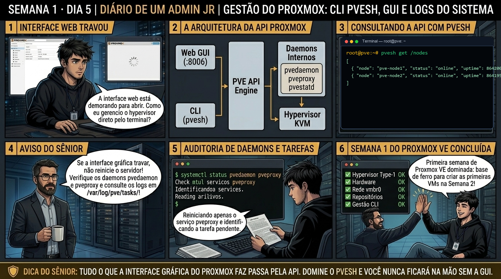

DIARIO DE UM ADMIN JR. | PROXMOX VE & PBS — DA BASE AO CLUSTER
🔗 Conecta com o Dia 4: O host está atualizado e estável. Hoje fechamos a Semana 1 dominando o coração da gestão do Proxmox VE: entendendo como a API REST comanda tudo por baixo dos panos, como usar a CLI pvesh para automação e como rastrear qualquer falha inspecionando tarefas (UPIDs) nos logs de /var/log/pve/tasks/.
🔓 Privilégio de hoje: Automação via CLI e Diagnóstico Avançado de Tarefas. Você ganha fluência na API do Proxmox via terminal para scripts e auditoria forense.
Semana 1 · Dia 5 | Nível Júnior — Automação & Logs
Gestão do Proxmox: CLI pvesh, GUI e Logs do Sistema
dominando a API do Proxmox pelo terminal e diagnosticando falhas de daemons e tarefas
ANTES DE ALTERAR, OBSERVE. DEPOIS DE ALTERAR, VALIDE.

1. O chamado
Você recebeu o chamado #1005: "A equipe de monitoramento via Zabbix/Prometheus precisa coletar métricas de saúde do nó pve01 e listar o status das tarefas via linha de comando para automação. Ao mesmo tempo, um operador relatou que a criação de um container LXC travou com a mensagem TASK ERROR: command failed sem mais detalhes na tela. O chamado exige: (1) Usar a ferramenta pvesh para consultar o endpoint /nodes/pve01/status e /cluster/resources; (2) Localizar o identificador UPID da tarefa travada; (3) Inspecionar o log detalhado no diretório de logs em /var/log/pve/tasks/; e (4) Criar um script de auditoria de 1 linha."
💡 Passa o mouse nas palavras destacadas pra ver uma dica rápida — clica se quiser a explicação completa com analogia.
2. O sênior te conta
🧑🏫 antes dos termos técnicos, a história de hoje
Fechando a primeira semana, simulei uma pane no switch de gerência: a interface web pela porta 8006 ficou inacessível, mas tínhamos uma sessão SSH de emergência aberta. Olhei pro Júnior e disse: 'Um cliente importante precisa saber agora se a VM de banco de dados está ligada ou desligada, e você não tem navegador. O que você faz?'. Ele congelou na hora.
Apresentei pra ele a ferramenta mestra dos engenheiros seniores: o pvesh. Expliquei que tudo o que a interface web faz no navegador é apenas chamar a API REST interna do Proxmox. Com o comando pvesh get /nodes ou qm list, você consulta inventários, liga e desliga recursos, audita storages e lê tarefas ativas com muito mais velocidade do que clicando com o mouse.
Mostrei também como filtrar o journalctl -u pveproxy para ver requisições em tempo real e auditar os logs de tarefas em /var/log/pve/tasks/. Foi o dia em que o Júnior deixou de ser um 'clicador de botões' e virou um sysadmin que domina o hypervisor por linha de comando. É essa autonomia que você vai praticar hoje.
3. Decodificador de conceitos
Clica em qualquer termo pra ver a definição completa e uma analogia do dia a dia:
4. Ferramentas e leitura da evidência
Comando / Parâmetro
O que observar e por que importa
pvesh get /nodes/localhost/status
Lê o status global do nó diretamente pela API REST do Proxmox em formato tabular ou JSON.
pvesh ls /nodes/localhost/tasks
Lista as tarefas recentes em execução ou finalizadas, exibindo seus UPIDs únicos e status.
journalctl -u pvedaemon -u pveproxy -e
Lê os eventos em tempo real dos serviços que atendem à API e processam requisições da web.
cat /var/log/pve/tasks/UPID:...
Exibe o log integral de saída de terminal de uma tarefa específica executada em background.
$ pvesh get /nodes/localhost/status
┌──────────────────┬────────────────────────────────────────┐
│ key │ value │
├──────────────────┼────────────────────────────────────────┤
│ cpu │ 0.0381 (3.8%) │
│ memory │ 21474836480 (21.4 GB / 256 GB) │
│ pveversion │ pve-manager/8.2.4/deb12 │
│ uptime │ 1814400 (21 days) │
│ kversion │ Linux 6.8.8-2-pve #1 SMP PREEMPT_DY... │
└──────────────────┴────────────────────────────────────────┘
$ pvesh get /nodes/localhost/tasks --limit 2
┌────────────────────────────────────────────────────────────┬────────┬────────┐
│ upid │ status │ type │
├────────────────────────────────────────────────────────────┼────────┼────────┤
│ UPID:pve01:00003A12:00A12B34:66D4:qmstart:100:root@pam: │ OK │ qmstart│
│ UPID:pve01:00003B90:00A12C50:66D4:vzcreate:200:root@pam: │ OK │vzcreate│
└────────────────────────────────────────────────────────────┴────────┴────────┘
5. Laboratório guiado — pegue na mão, comando por comando
🖥️ Onde executar: Terminal SSH direto no Nó físico Proxmox (logado como root@pve:~#) ou via console no monitor local.
Segurança: Use apenas métodos get ao explorar o pvesh para evitar remoções acidentais de recursos.
Ação: Interaja diretamente com a API REST do Proxmox via CLI usando pvesh.
pvesh get /nodes
Resultado esperado: Tabela com métricas de CPU, RAM, versão do kernel e uptime.
Por que fizemos isso: O utilitário pvesh permite interagir diretamente com a árvore da API REST local, listando recursos do datacenter sem depender do navegador web.
Cilada comum: Executar métodos destrutivos como 'pvesh delete' sem validar previamente o endpoint exato da API, apagando configurações críticas do nó.
Ação: Filtre os logs de requisições web e transações da API com journalctl.
journalctl -u pveproxy -n 20 --no-pager
Resultado esperado: Lista de 5 tarefas com colunas upid, type, status e starttime.
Por que fizemos isso: Filtrar o journalctl com -u pvedaemon e -u pveproxy isola os logs de transações administrativas e requisições HTTP, revelando a causa raiz de chamadas que deram erro.
Cilada comum: Rodar journalctl sem filtros em nós de alta carga, afogando o terminal com milhões de linhas de logs gerais do kernel.
Ação: Inspecione o histórico de tarefas administrativas em /var/log/pve/tasks/.
ls -lt /var/log/pve/tasks/ | head -10
Resultado esperado: Leitura do arquivo de texto contendo a transcrição detalhada da execução.
Por que fizemos isso: Inspecionar o arquivo de log de tarefas em /var/log/pve/tasks/ permite auditar o histórico de criação, migração e backup de VMs com timestamp e usuário executor.
Cilada comum: Apagar a pasta /var/log/pve/tasks/ achando que é lixo de disco; isso destrói o histórico de auditoria e tarefas em andamento do painel.
Ação: Consulte o status da assinatura corporativa do nó com pvesubscription.
pvesubscription get
Resultado esperado: Mensagens de inicialização de workers e processamento de chamadas REST.
Por que fizemos isso: Consultar o status de assinatura com pvesubscription get valida a chave de suporte e o nível de cobertura do contrato corporativo do servidor.
Cilada comum: Ignorar alertas de licença expirada em ambientes corporativos de missão crítica, perdendo acesso ao suporte oficial da Proxmox Server Solutions.
🧑🏫 Aqui entra o Mentor (em breve): se o comando pvesh travar ou retornar 500 connection refused, o Sênior-IA ajudará a diagnosticar o reinício do pvedaemon e a integridade do cluster filesystem em /etc/pve/.
Ação: Formalize o baseline da Semana 1 com relatório completo de comandos.
# Baseline do hypervisor concluído.
Resultado esperado: Execução de pvesh get /nodes/localhost/qemu --output-format json filtrando VMs com status stopped.
Por que fizemos isso: Consolidar o checklist de comandos CLI e baseline de logs conclui a homologação da Semana 1, garantindo que o nó físico está 100% pronto para receber máquinas virtuais.
Cilada comum: Avançar para a criação de VMs na Semana 2 sem dominar os comandos de inspeção e logs do host físico.
6. Antes de ver as opções — tenta responder
🧠 Recall ativo: Qual é a relação técnica direta entre um clique que você faz na interface web do Proxmox (GUI) e o comando 'pvesh' executado no terminal?
A interface web (GUI) não executa comandos do sistema diretamente: ela faz chamadas HTTP REST (GET, POST, PUT, DELETE) para os endpoints da API servida pelo pveproxy / pvedaemon. O comando pvesh é simplesmente o cliente CLI oficial que acessa exatamente a mesma árvore de endpoints da API diretamente pelo terminal, sem precisar abrir o navegador.
QUESTÃO 1 de 3
7. Questão comentada — clica numa alternativa
Qual comando pvesh obtém o resumo completo de CPU, memória, versão do Kernel e uptime do nó local formatado como tabela?
💡 Analogia do Sênior para Fixar: Na arquitetura do Proxmox sobre Gestão do Proxmox: CLI pvesh, GUI e Logs do Sistema: O KVM/QEMU opera como o motorista dedicado de cada passageiro, alocando recursos virtuais em contato direto com o kernel.
QUESTÃO 2 de 3 — cenário de erro real
7.1 Investigando a causa raiz de um UPID com falha
A interface web reporta TASK ERROR: command 'rsync ...' failed: exit code 23 na tarefa UPID:pve01:00004120:00B22C00:66D4:vzdump:100:root@pam::
Onde você encontra o arquivo de log completo com cada linha executada por essa tarefa no sistema de arquivos do Proxmox?
💡 Analogia do Sênior para Fixar: Ao diagnosticar problemas em Gestão do Proxmox: CLI pvesh, GUI e Logs do Sistema: É como inspecionar as conexões do storage e o barramento PCIe antes de declarar falha de software.
QUESTÃO 3 de 3 — detalhe que confunde todo iniciante
7.2 "Por que o comando pvesh não exige senha de root quando executado no terminal?"
Ao rodar pvesh logado como root via SSH, o sistema não pede token de autenticação nem senha:
Por que isso ocorre e como funciona a segurança do pvesh?
💡 Analogia do Sênior para Fixar: A governança e resiliência em Gestão do Proxmox: CLI pvesh, GUI e Logs do Sistema: Funciona como a política de contenção e redundância do datacenter, garantindo que o cluster nunca perca quorum.
8. Procedimento profissional
Conecte-se ao nó Proxmox via SSH e teste a comunicação da API com pvesh get /version.
Consulte o inventário de recursos do nó ou cluster com pvesh get /cluster/resources.
Monitore tarefas em andamento executando pvesh get /nodes/localhost/tasks --limit 10.
Em caso de erro em tarefas, capture o UPID retornado e inspecione o arquivo de log em /var/log/pve/tasks/.
Valide os daemons do sistema (pvedaemon, pveproxy e pvestatd) com systemctl status.
Documente os endpoints da API utilizados nos scripts de automação da equipe.
Prevenção
Mantenha o inventário de hardware e baseline de BIOS atualizados; nunca altere parâmetros de virtualização física sem agendamento e teste em ambiente isolado.
9. Validação e encerramento
Você domina o uso da ferramenta pvesh para navegar na API do Proxmox pelo terminal.
Você entende a estrutura dos identificadores UPID e como rastrear logs de tarefas.
Você sabe auditar e solucionar falhas nos daemons centrais pvedaemon e pveproxy.
Você integrou scripts de auditoria em linha de comando sem depender exclusivamente da interface gráfica.
A Semana 1 (Fundamentos e Hypervisor Base) foi 100% concluída com excelência técnica!
Rollback e limites
Consultas de leitura com pvesh get não alteram estados de VMs nem arquivos de configuração, não exigindo rollback. Ao utilizar métodos set, create ou delete, certifique-se dos IDs antes de confirmar.
💡 Sobre repetição espaçada: Os conceitos de pvesh, UPID, pvedaemon, REST API e task logs serão incorporados ao seu baralho Anki e serão utilizados durante toda a criação e automação de VMs na Semana 2.
10. Resposta final
Alternativa correta: B. O comando pvesh get /nodes/localhost/status consulta o endpoint oficial da API REST e retorna o status detalhado de hardware, sistema e uptime do nó Proxmox VE.
🔓 O que você desbloqueou hoje
🏆 PARABÉNS! Você concluiu a SEMANA 1 com maestria! Você dominou o Hypervisor Type-1 Bare-Metal, o dimensionamento de hardware e discos, a rede Linux Bridge e o ecossistema de APIs e repositórios. Na próxima semana (Semana 2 — Máquinas Virtuais KVM), você começará no Dia 1 aprendendo a escolher a arquitetura da VM: SeaBIOS vs UEFI/OVMF e os chipsets virtuais q35 vs i440fx para cargas modernas!